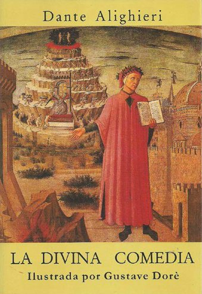

Los cinco mejores libros de la historia
Os ofrecemos una selección de algunos de los mejores libros de la historia. No es un ránking, pero están (casi) todos los imprescindibles. Lecturas ideales para recuperar en verano.
1984, de George Orwell
Publicada en 1949, la distopía de George Orwell es considerada por muchos una obra
visionaria de los tiempos que nos ha tocado vivir. Aborda temas como la manipulación
de la información, la vigilancia masiva (introdujo el concepto de El Gran Hermano que
todo lo ve) y la represión política y social.
Cien años de soledad, de Gabriel García Márquez
La novela del escritor colombiano que narra las vicisitudes de la familia Buendía a lo
largo de siete generaciones en el ficticio pueblo de Macondo es considerado por muchos
la mejor novela de todos los tiempos. Referente del boom latinoamericano y abanderado
del realismo mágico, esta obra, publicada en 1967, para muchos debería encabezar el
ranking.
El Conde de Montecristo, de Alexandre Dumas
La clásica novela de aventuras que aparece en todas las listas. El autor de Los
tres mosqueteros, escribió en 1844 esta novela que se publicó por entregas y que
cuenta la historia de Edmundo Dantés, marinero que debido a una traición acaba en
prisión de la que conseguirá escapar para convertise en el conde del título.
Crimen y castigo, de Fiódor Dostoievski
Publicada en 1866, la novela de Dostoievski es considerada una de las cumbres de
la literatura rusa. El análisis psicológico que realiza del protagonista, el
estudiante Rodión Raskólnikov, que se enfrenta a un dilema moral. Es capaz de
justificar humanitariamente un crimen, pero que al cometerlo verá cómo lo persigue
la culpa.

La Divina comedia, de Dante
Dividido en cánticas (Infierno, Purgatorio y Paraíso), Dante, Beatriz y Virgilio
protagonizan este poema que resume los conocimientos desde la civilización clásica
a medieval, las creencias o la filosofía. Dante escribió este libro en las primeras
décadas de 1300 y que ha llegado hasta nuestros días considerada como una de las obras
maestras de la literatura y ha servido como referente a multitud de creadores de todas
las épocas.